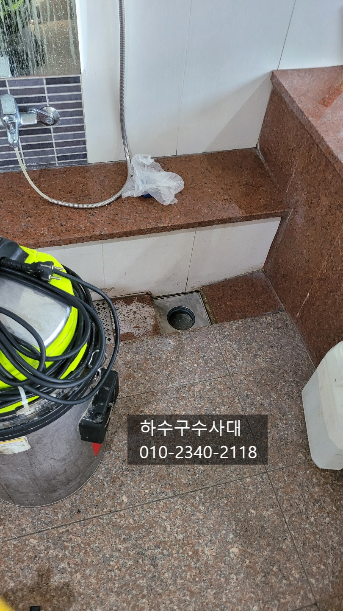
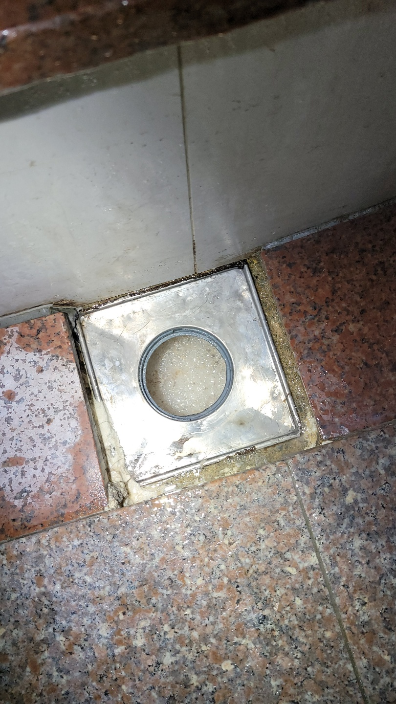
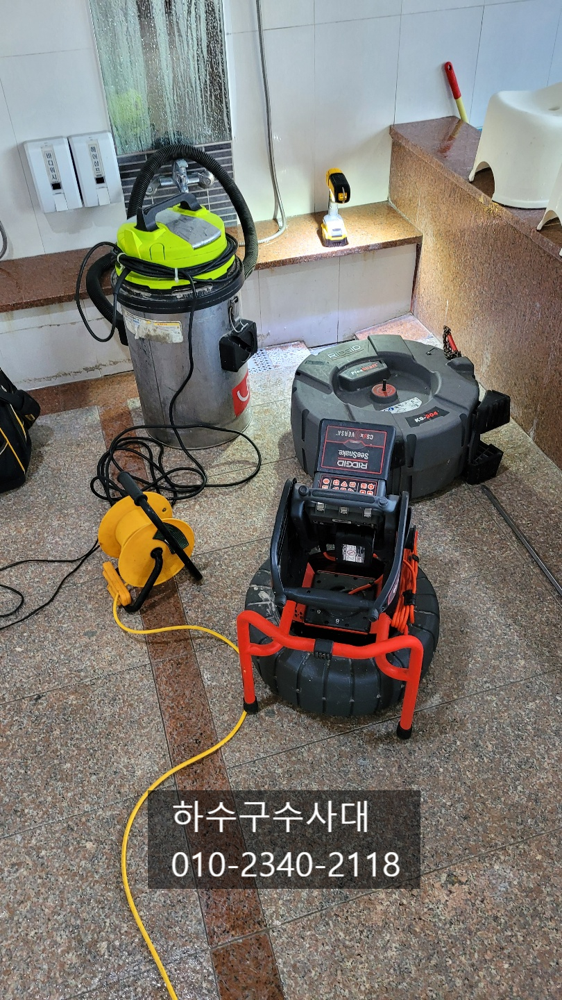
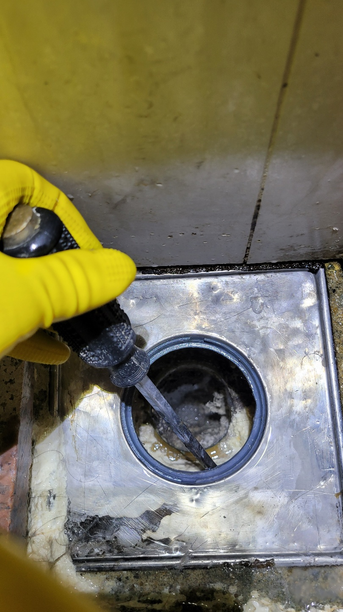
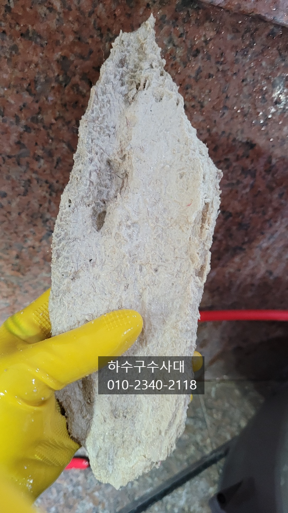
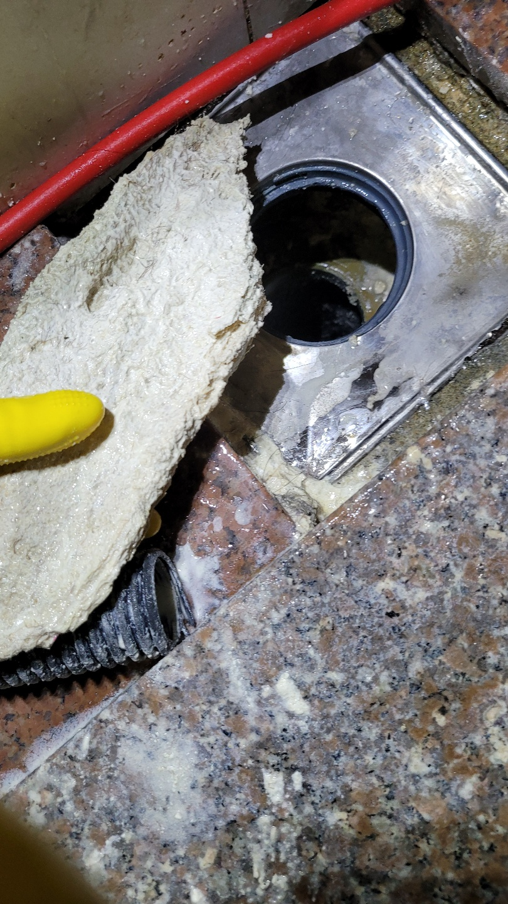

🏠 욕실하수구막힘 하수구석회제거방법
서울 하수구막힘 전문 시공 후기

📋 작업 개요
- 위치: 서울
- 서비스 유형: 하수구막힘, 배관막힘, 뚫는업체
- 작업 일시: 2021. 11. 7. 23:55
- 업체명: 하수구수사대 (010-5615-2118)
🔍 문제 상황
욕실하수구막힘 하수구석회제거방법
안녕하세요
오늘은 골프연습장내에
있는 목욕탕을 다녀왔습니다.
목욕탕 하수구에서 물이 원활하게
배출되지않아 물이 차오르는 증상을 겪고
계셨는데요 막힐때마다 뚫기는 했지만
얼마가지 못하고 또 막힘증상이 있어
하수구수사대에 연락을 주셨습니다.
오늘 작업할곳은 여자샤워실이였는습니다.
하수구에 석회성분이 쌓이는 이유는 몇가지있지만
대체적으로 비누와샴푸,바디워시 등등 거품이 나는 제품안에
있는 석회성분이 배관에 붙어 조금씩 쌓이는 현상입니다.
그러다보니 조금씩 조금씩 아주오랜기간이 되야
석회가 쌓이는것을 확인할수 있는데요
그러다보니 하수구배관에 관리가소홀해 질수밖에 없습니다.
물만 충분히 흘려보내도 석회가 쌓이는것을

🔎 원인 분석
💡 전문가 진단: 하수구수사대010-2340-2118
방지할수 있으니 참고해주세요^^
우선 딱딱해진 석회를 제거하려면 약품으로
석회를 연하게 만들어 줘야하는데요 너무 딱딱해진
석회는 돌처럼 단단하기 때문에 장비로도 쉽게
부서지지가 않기 때문입니다.
딱딱해진 석회를 물리적인 충격을 가해서 제거하려다가
배관을 손상시킬수 있으니 주의하셔야해요.
배관구조에 따라서 작업방식도 달라지는데요
아파트욕실 배관구조는 대부분 p트랩구조로 되어있어
위에서 작업이 되지 않는 경우가 많고
주택의경우 엘보를 사용하기때문에 막힌 구간에서
작업이 이루지는게 대부분입니다.
오늘 작업하는 골프연습장 샤워실의 배관구조는
다행히 엘보를 썼기때문에 막힘구간에서 작업이
가능하였습니다. 다만 배관크기가 아파트가정집보다
2배가 되는 100mm사이즈라 석회양도 어마어마한 양이
나왔습니다.

🔧 작업 과정
보시는것처럼 배관에서 떨어져나온 석회인데요
어른 손바닥보다 훨씬 급니다.
거의 돌처럼 딱딱해져 장비로도 깨기 쉽지
않았는데요 그래도 석회녀석에게 져서는 안되겠죠??^^
석회를 갈아내는 작업을 하고있는데요
장비 앞에 체인이 돌아가면서 석회를 조금씩
갈아내고 석션으로 흡입하는 방식으로 반복적으로
진행을 하였습니다.
이곳 관리자께서 한달전에 뚫었는데 금방막혀
석회제거제도 넣어보고 압축기로도 뚫으려고 해봐도
내려가지 않아 애를 많이 먹으셨다고 합니다.
아무래도 석회는 이미 딱딱해져서 약품으로는
제거가 되지 않다보니 장비로 부수고
꺼내는 것이 바람직한 작업방법입니다.
석션통을 열어보니 머리카락과 갈아낸 석회가루가 많이
나왔는데 석회가 배관에 붙고 딱딱해져
머리카락이 석회에 걸려 나가지 못하는 경우가
많습니다. 그렇게 석회가 머리카락에 묻고 걸리면서
석회가 점점 많아지게 되는거죠.
배관크기가 크다보니 석회양도 많이 나왔습니다^^
오랜기간 배관에 쌓여온 석회를 모두 제거하였는데요
의뢰하신 고객님께서도 깨끗해진 배관내부를
보시고 만족해 하셨습니다^^
작업전과 작업후의 사진인데요
배관안에 있던 석회를 모두 제거하고 나니
작업한 저희 마음도 시원하고 뿌듯합니다^^
이제 이곳을 관리만 꾸준히 해주신다면


✅ 작업 완료
향후20년? 이상은 끄떡없이 쓰시겠어요.
저희 하수구수사대는 서울,경기,인천 전지역에서
활동중입니다.
타업체가 못뚫는 하수구!! 못찾는 하수구!!!
언제든지 연락주세요^^
하수구수사대
010-2340-2118




⚠️ 하수구 배관 막힘 예방 및 관리 가이드
- ✅ 머리카락, 비닐, 물티슈 등 물에 분해되지 않는 이물질은 하수구 유입을 절대 금지해 주세요.
- ✅ 하수구 거름망을 씌우고 모여진 이물질은 주기적으로 쓰레기통에 바로 비워주셔야 합니다.
- ✅ 배관 노후가 심할 경우 이물질이 더 쉽게 걸리므로 주기적인 배관 세척(고압세척 등)을 권장합니다.
- ✅ 작업 후 1년 이내 재발 시 하수구수사대에서 무상 A/S 보증 서비스를 제공합니다.
💡 핵심 정리
- 확실한 장비 작업(내시경 점검 및 샤프트 스케일링)으로 원인을 뿌리 뽑습니다.
- 작업 후 1년 이내에 동일한 부위 재발 시 100% 무상 A/S 서비스를 보장합니다.
- 서울 · 경기 · 인천 전 지역에 24시간 언제든 긴급 출동할 수 있도록 항시 대기 중입니다.
❓ 자주 묻는 질문 (FAQ)
🚨 서울 하수구막힘 문제로 고민이신가요?
정확한 원인 진단과 확실한 시공으로 재발 없는 해결을 약속드립니다.
24시간 긴급 출동 | 서울 · 경기 · 인천 전지역 | 1년 내 재발 시 무상 A/S